Waman Suryawanshi
Frontend Developer | React Developer
Education
Bachelor of computer science(BCA)
College: Mgm collage of Computer science
Branch: computer science
Year: 2022 - 2026
About Me
🚀 Computer science Student | Web Developer
Hello! I'm Waman Suryawanshi, a Computer Engineering student with a strong passion for Web Development and technology. I enjoy creating responsive, user-friendly, and visually appealing websites using modern web technologies. My technical skills include HTML, CSS, JavaScript, Bootstrap, React.js, Git, and GitHub. I am continuously learning and improving my skills by building real-world projects and exploring new technologies. I have developed projects such as a Gym Management Website, Personal Portfolio Website, and various responsive web applications. Through these projects, I have gained hands-on experience in front-end development, UI design, and creating seamless user experiences. I am passionate about solving problems through technology and always eager to learn new tools, frameworks, and development practices. My goal is to build innovative digital solutions and grow into a skilled Full Stack Developer.
Currently pursuing bca with a strong interest in Frontend Development, React.js, and Web Technologies.
I create responsive and modern websites using HTML, CSS, JavaScript, Bootstrap and React.
Skills
Projects
Gym Website
🚀 Excited to share my latest project –
Adii PowerFit Gym Website!
💪 Features:
✅ Modern Gym Landing Page
✅ Membership Registration Form
✅ Fitness Programs Section
✅ Responsive Design
Attractive UI with HTML,
CSS & Bootstrap
This project helped me improve my frontend developmentbr
skills and create a professional fitness website experience.
#WebDevelopment #FrontendDeveloper #HTML #CSS #Bootstrap
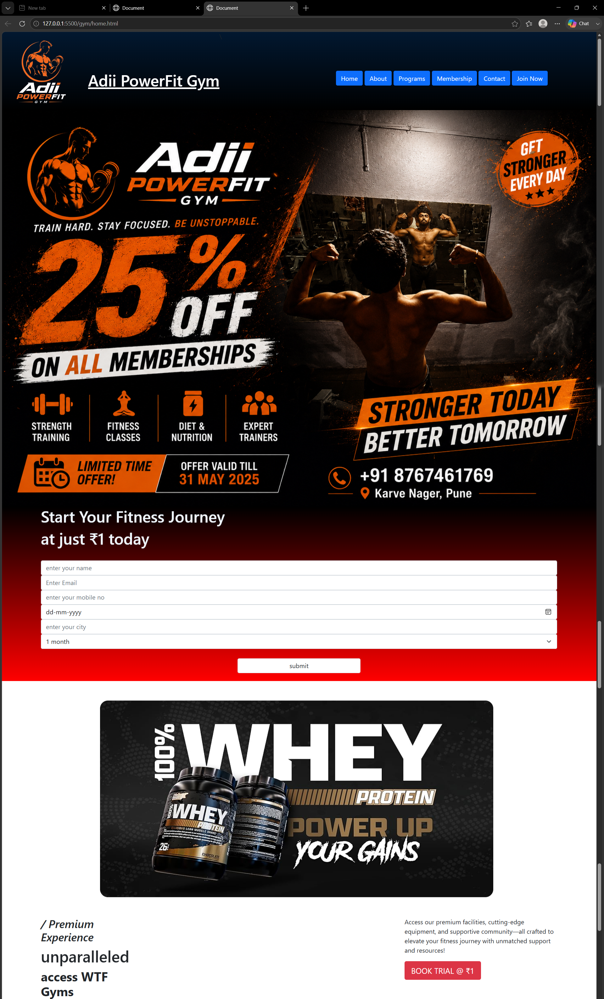
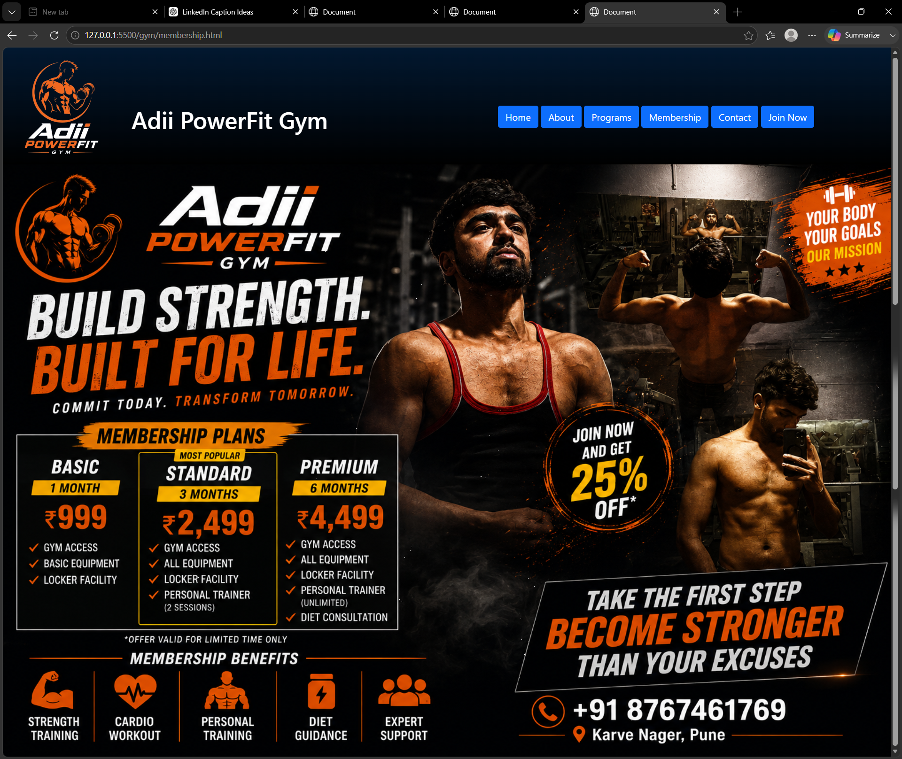
.png)
Adhyayan Website
🚀 Excited to share my project –
Adhyayan it traning & placement Website!
💪 Features:
✅ cources Landing Page
✅ Registration Form
✅ Programs Section
✅ Responsive Design
Attractive UI with HTML,
CSS & Bootstrap
This project helped me improve my frontend developmentbr
skills and create a professional fitness website experience.
#WebDevelopment #FrontendDeveloper #HTML #CSS #Bootstrap
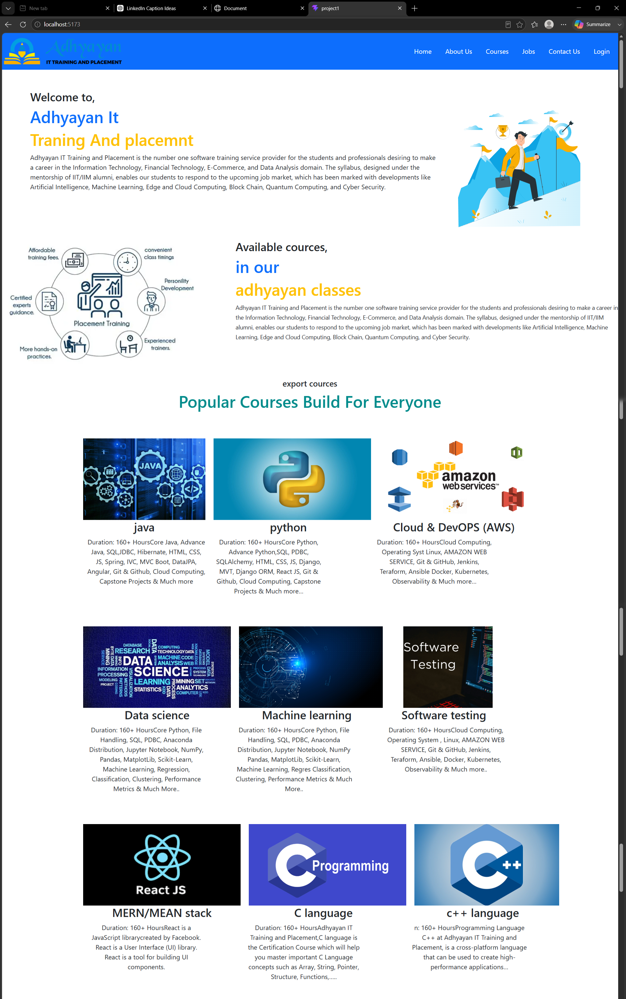
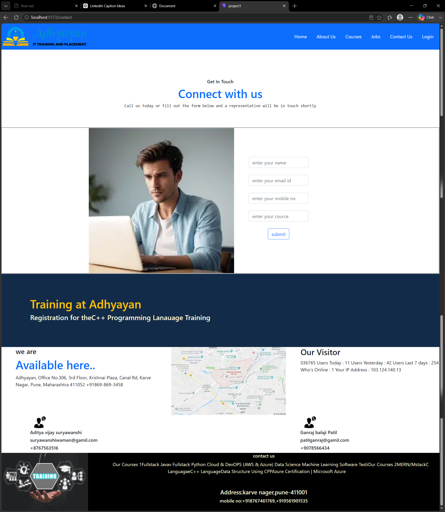
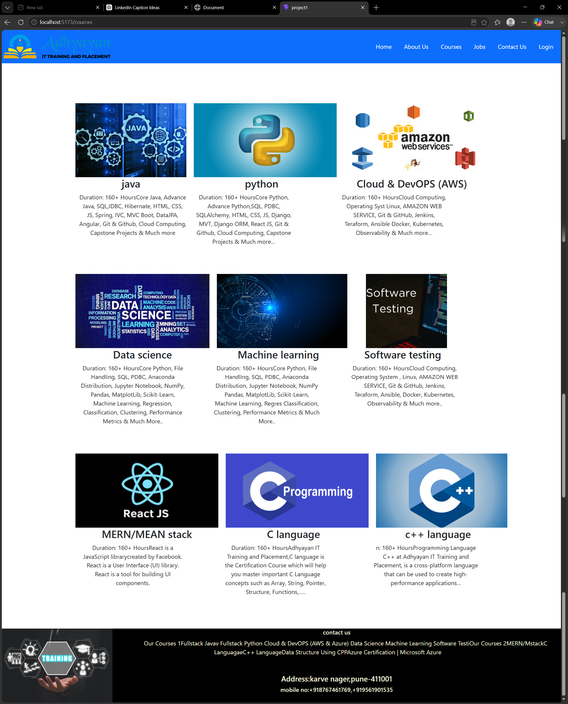
portfolio
🚀 Excited to share my project –
I'm happy to showcase my personal portfolio, where I've highlighted my skills, education, and projects as a Frontend & React Developer.
✨ Portfolio Highlights:
🔹 Responsive & Modern UI
🔹 About Me & Education
🔹 Technical Skills
🔹 Featured Projects
🔹 Certificates
🔹 Contact Section
🛠️ Technologies Used:
HTML | CSS | JavaScript | Bootstrap | React | Git & GitHub
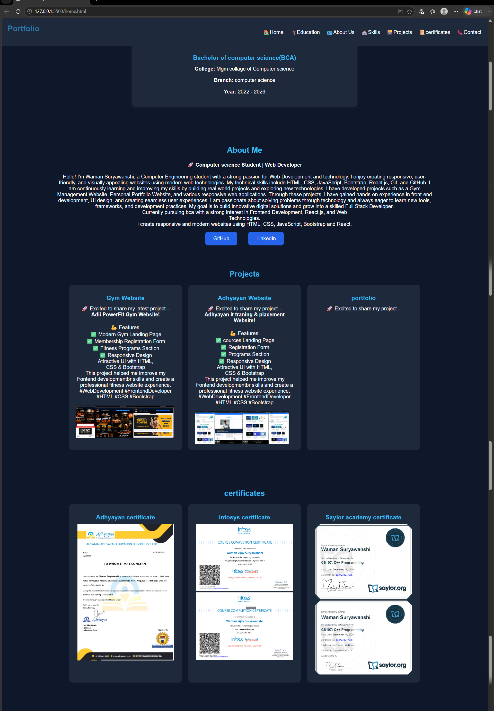
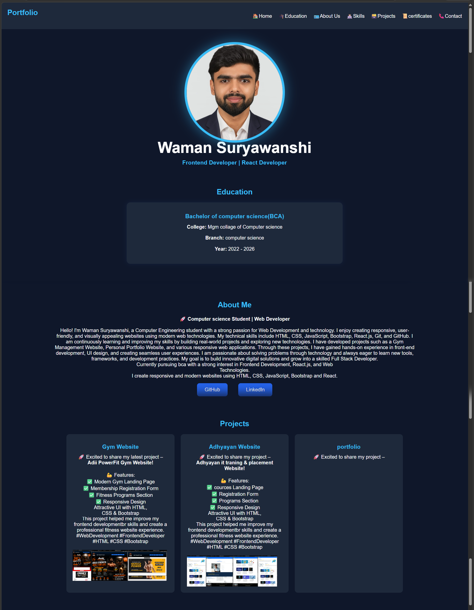
certificates
Adhyayan certificate
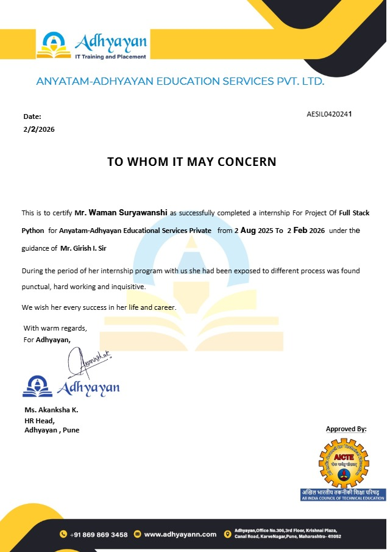
infosys certificate
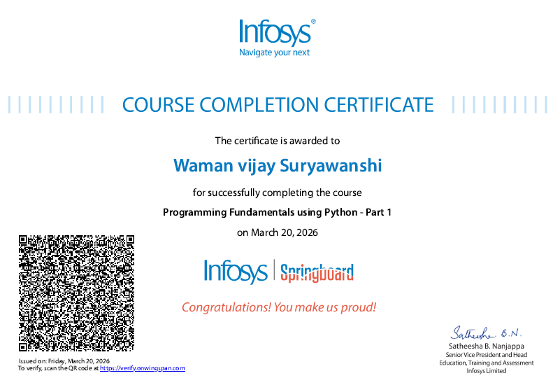
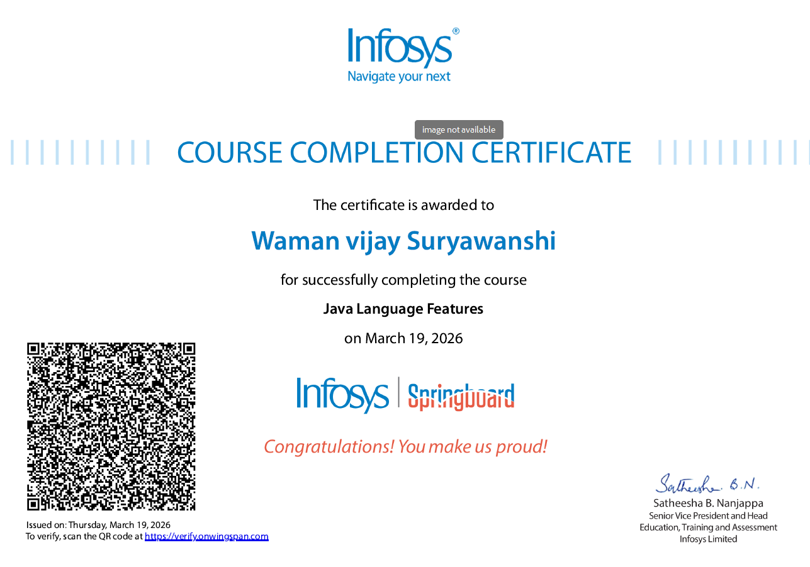
Saylor academy certificate
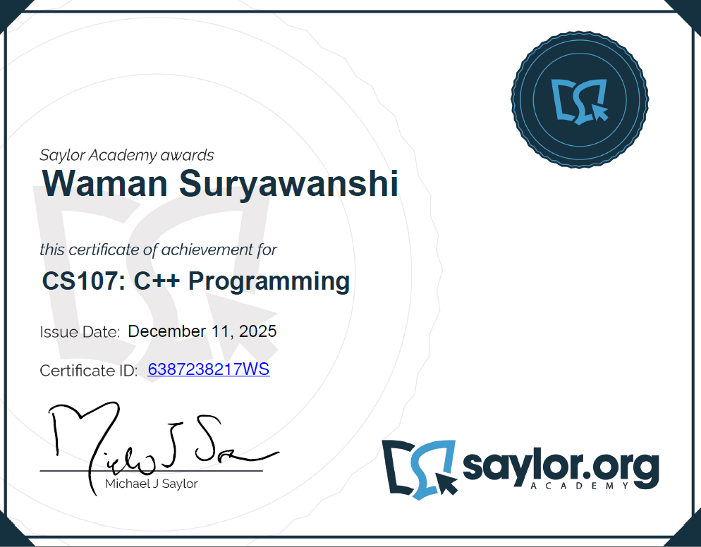
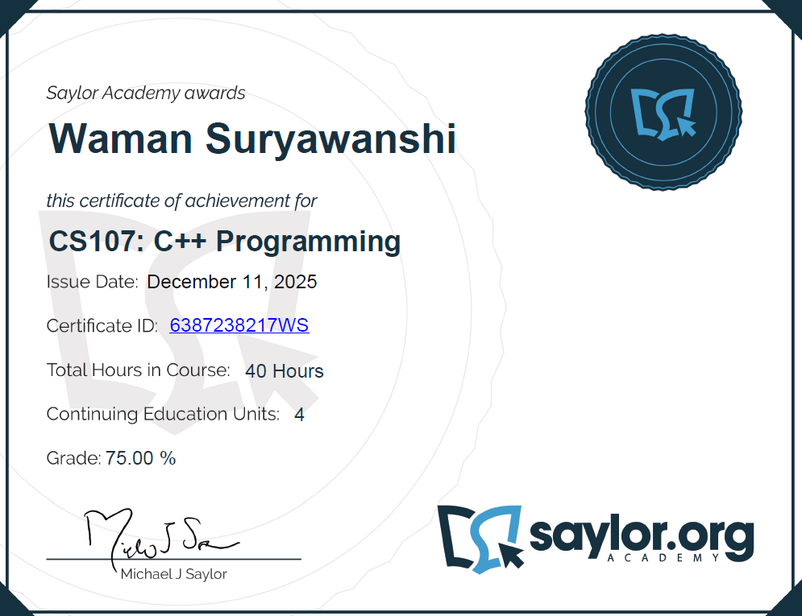
Contact Me
📞 8767461769
📧 suryawanshiwaman673@gmail.com
📍 Pune, Maharashtra
GitHub LinkedIn